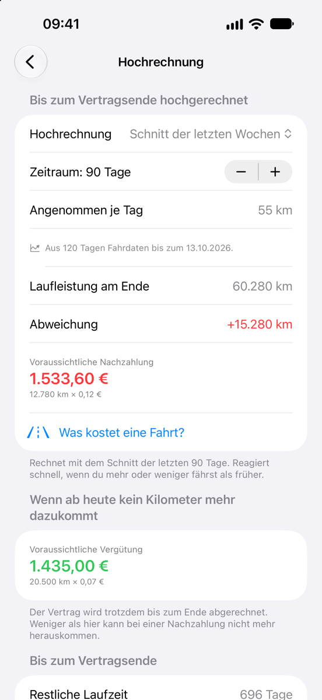

Leasingtacho
LeasingtachoKilometer-Check zum Jahresende: jetzt die Leasing-Kilometer prüfen
Fährst du ein Auto mit Kilometerleasing, merkst du oft erst bei der Rückgabe, wie teuer jeder Kilometer zu viel ist. Ein kurzer Check zum Jahresende zeigt dir, wo du stehst – und lässt noch Zeit zum Gegensteuern.
Stand: November 2026
So wird beim Kilometerleasing abgerechnet
Beim Kilometerleasing vereinbarst du eine Gesamtlaufleistung, etwa 30.000 Kilometer in drei Jahren. Abgerechnet wird erst am Vertragsende: Für jeden Kilometer darüber verlangt dein Leasinggeber den vereinbarten Mehrkilometersatz, für jeden Kilometer darunter gibt es meist eine Vergütung, oft zu einem niedrigeren Satz und gedeckelt. Viele Verträge haben eine Freigrenze, innerhalb derer weder nachgezahlt noch vergütet wird.
Warum gerade zum Jahresende?
Der Jahreswechsel ist ein guter Zeitpunkt für einen Blick auf den Tacho. Deine Fahrten fürs neue Jahr – Arbeitsweg, Urlaub, Familienbesuche – kannst du meist schon absehen, und bis zur Rückgabe bleibt Zeit, etwas zu ändern.
Der Check in fünf Minuten
- Im Vertrag nachsehen: Gesamtlaufleistung, Beginn und Laufzeit, Mehr- und Minderkilometersatz, Freigrenze.
- Das Soll für heute ausrechnen: Gesamtlaufleistung mal verstrichene Tage, geteilt durch alle Tage der Laufzeit.
- Den Kilometerstand ablesen und den Stand bei der Übernahme abziehen.
- Hochrechnen: gefahrene Kilometer geteilt durch die verstrichenen Tage, mal alle Tage der Laufzeit.
- Die Differenz zur Gesamtlaufleistung mit dem Mehr- oder Minderkilometersatz multiplizieren.
Keine Lust auf Tage zählen? Der kostenlose Kilometer-Rechner erledigt die Schritte 2 bis 5 für dich.
Rechenbeispiel: 30.000 km in drei Jahren
Ein Vertrag über 36 Monate und 30.000 Kilometer hat am 1. Januar 2025 begonnen und endet am 31. Dezember 2027. Am Jahresende 2026 sind zwei von drei Jahren um.
| Vereinbarte Laufleistung | 30.000 km |
|---|---|
| Soll heute (zwei von drei Jahren) | 20.000 km |
| Gefahren seit der Übernahme | 23.500 km |
| Hochrechnung zur Rückgabe (23.500 km ÷ 2 × 3) | 35.250 km |
| Mehrkilometer | 5.250 km |
| Nachzahlung ohne Freigrenze (5.250 km × 0,10 €) | 525 € |
| Nachzahlung mit 2.500 km Freigrenze (2.750 km × 0,10 €) | 275 € |
Geht es so weiter, stehen bei der Rückgabe rund 35.250 Kilometer auf der Uhr – 5.250 zu viel. Bei 10 Cent je Mehrkilometer wären das 525 Euro. Mit einer Freigrenze von 2.500 Kilometern blieben 2.750 Kilometer und damit 275 Euro.
Jetzt gegensteuern
Steuerst du jetzt gegen, hast du es leichter: Um im Beispiel bei 30.000 Kilometern zu landen, blieben fürs letzte Jahr noch 6.500 Kilometer, gut 540 im Monat statt bisher knapp 980.
Ist das nicht machbar, lohnt eine Anfrage bei deinem Leasinggeber: Manche passen die Laufleistung während der Laufzeit an, oft günstiger als die Nachzahlung am Ende. Wie du das Angebot mit der Nachzahlung vergleichst, steht im Artikel Leasing-Kilometer nachkaufen oder anpassen. Umgekehrt gilt: Fährst du deutlich weniger, frag nach, ob sich die Laufleistung senken und die Rate verringern lässt.
Nicht nur einmal nachsehen
Wichtig ist, nicht nur einmal nachzusehen. Notierst du alle paar Wochen den Stand, siehst du früh, ob ein Urlaub oder ein neuer Arbeitsweg die Rechnung kippt.
Die Hilfsmittel
Der kostenlose Kilometer-Rechner im Browser rechnet ohne Anmeldung Soll, Hochrechnung und Abrechnung samt Freigrenze aus. Die iPhone-App Leasingtacho erinnert dich ans Ablesen und rechnet bei jedem neuen Kilometerstand neu.


Diese Seite erklärt, wie man üblicherweise rechnet. Die Beträge sind Beispielwerte, keine Richtwerte. Maßgeblich sind dein Vertrag und die Abrechnung deines Leasinggebers.